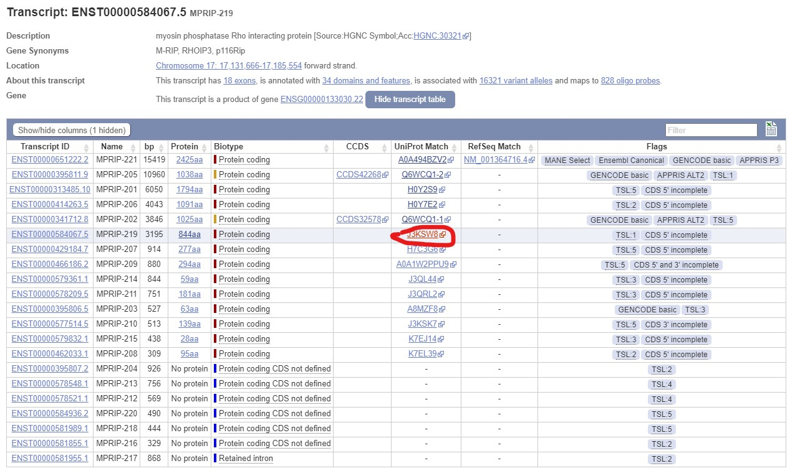
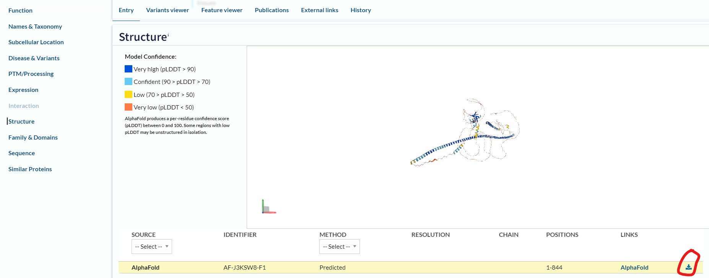

蛋白质结构预测
以一篇 nature 文章中做的 MPRIP 基因结构为例，走完一遍蛋白质结构预测与可视化比较
文章链接：RBFOX2 modulates a metastatic signature of alternative splicing in pancreatic cancer，其中 RBFOX2 调控的一个基因 MPRIP ，exon 23 跳过与否导致了不同的功能效果，于是作者对两种 form 的结构进行了比较。
获取蛋白结构
ensembl 中已知的转录本跳转 Uniprot
在 ensembl 中搜索 MPRIP 基因，选取需要的转录本，点击对应的 Uniprot 链接，跳转到 Uniprot；

点击导航栏 Structure 部分，跳转到 structure；
点击下载 .pdb 文件

Uniprot/PDB 搜索ID
根据 AF ID 到 AlphaFold Prot DB 获取已被预测的结构
Structural illustrations were generated with PYMOL, using predicted models of MPRIP on alphaFold: AF-Q6WCQ1-F1-model_v3_1 (Exon 23 included) and AF-B9EGI2-F1-model_v3 (Exon 23 excluded)其中 Q6WCQ1 和 B9EGI2 就是 AF (AlphaFold) ID
全新的蛋白通过 alphafold 预测
- 在线使用 server: 搜索 alphafold colab 或者进入链接 alphafold colab。提醒：需要梯子。参考: 在线 AlphaFold 预测
- 安装 alphafold 到服务器。找一篇帖子跟着走。
使用 pymol 可视化
pymol 导入文件
- 直接导入本地的 .pdb 文件，
load 1dn2.pdb - 根据 PDB 中的 ID，进行获取，
fetch 1dn2
pymol 的基本操作还是自己找攻略
学习资料：
- pymol 入门基础
- official command help
- core command
- PyMOL必备绘图技巧，从此游刃有余!
- pymol 选择器的语法参考，参考：pymol Selection Algebra
使用 pymol 一方面是常查手册、攻略，另一方面，利用右侧的 object menu (对象窗口)，每个对象有 A (Action) S (Show) H (Hide) L (Label) C (Color) 五个按钮，可以对相应对象完成一些操作，并且在实现这些操作时，会在 Feedback window 输出相应的 command line，查看这些 command line，也会帮助我们学习 command 实现操作。
比较蛋白结构
比较两个蛋白结构差异是很重要的手段，在 pymol 中可以通过 align (序列一致性低于 30% 时，使用 super 或者 cealign) 完成这项任务
RMSD用来表是蛋白质结构之间差异的参数，计算RMSD时，可以针对目标蛋白质(如: 所有的原子、骨干部份或只考虑 alpha 碳原子等等)。不同的标准，计算RMSD的数值会有所差异。
使用 chimera 寻找结构差异
distance matrix 是对3D结构比对的一个补充，可以很轻松的找到结构发生明显差异的区域，可以先用distance matrix 找出结构明显不同的地方，然后在3D图中找到这些区域，仔细观察氨基酸组成以及可能的活性差异机制。使用 chimera 的 RR Distance Maps 就可以进行计算。
Tools > Structure comparison > RR Distance MapsPPI 互作分析：
可以使用 alphafold2-multimer 进行预测